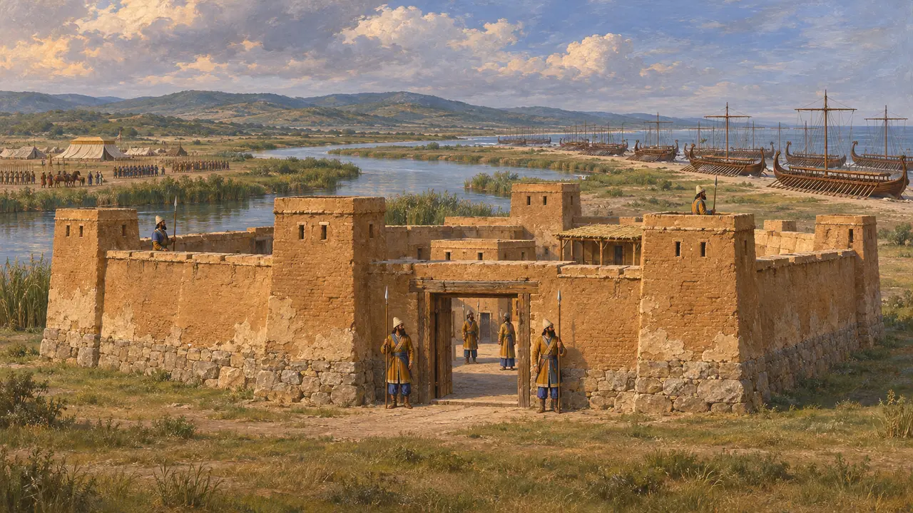
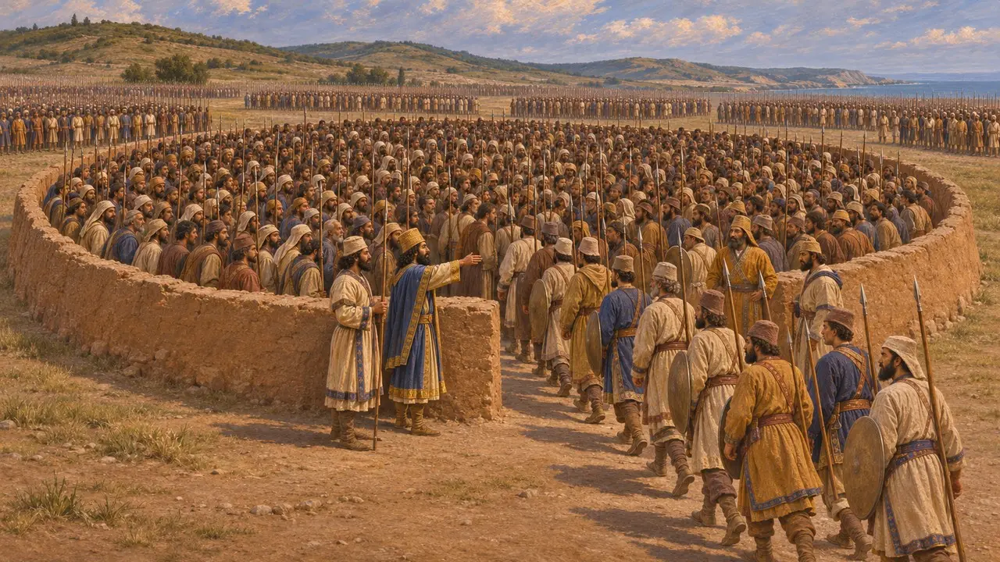
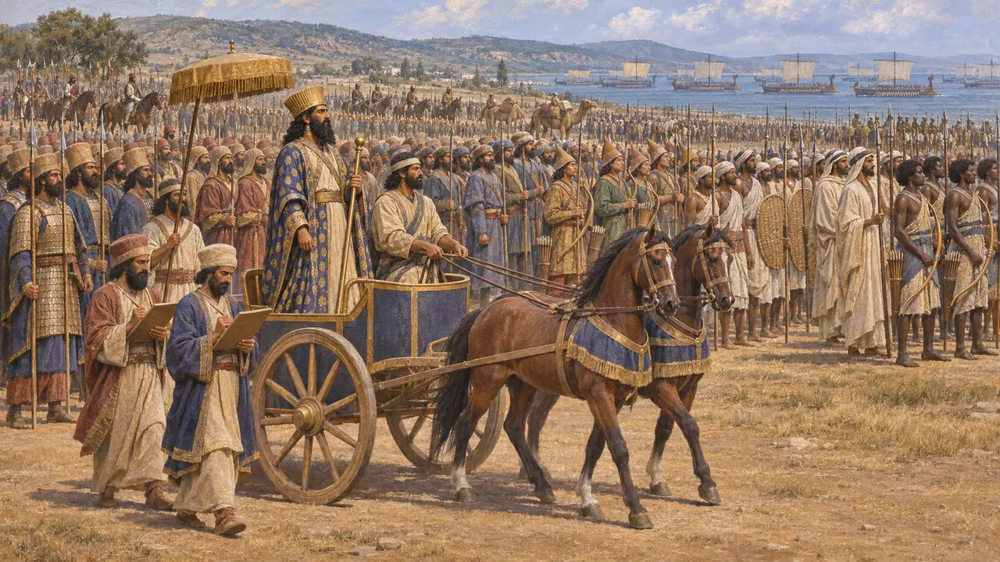
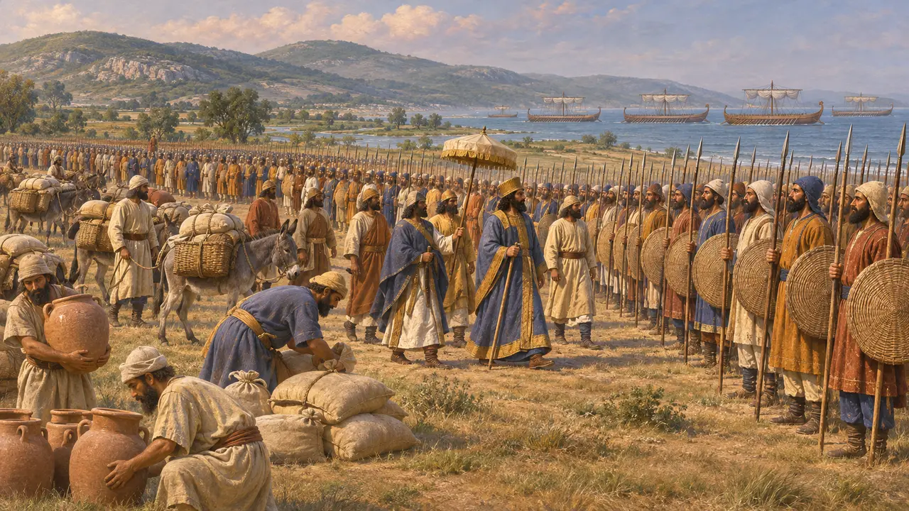
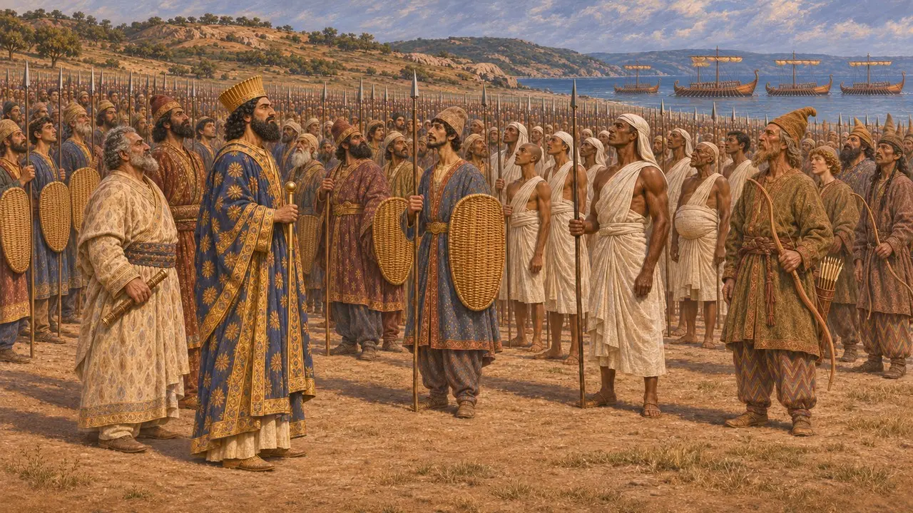

Enciclopédia › Batalhas e eventos

A revista das tropas em Dorisco
A contagem e a inspeção que Xerxes fez de seu exército e de sua frota na Trácia, 480 AEC
No jogo: Nível 10: Os Portões Quentes
Em 480 AEC, depois de atravessar o Helesponto, Xerxes fez uma parada na planície de Doriscos, na Trácia, e mandou contar seu exército e passar em revista sua frota. Heródoto aproveita a parada para enumerar todos os povos do exército do Rei. Seu total de 1.700.000 soldados de infantaria é o número mais conhecido da guerra, e quase nenhum historiador moderno o aceita.
No jogo: A Crônica conta da contagem feita enchendo repetidamente um cercado para dez mil homens, dá os 1.700.000 soldados de infantaria de Heródoto e observa que os historiadores modernos estimam o exército real em um décimo disso ou menos.

O forte de Dario no Hebro
Relato antigoHeródoto descreve Doriscos como um trecho da costa trácia e uma ampla planície por onde o Hebro corre até o mar. Dario havia construído ali um forte real durante sua campanha contra os citas e deixara uma guarnição persa. Xerxes parou ali em 480 AEC, e a frota foi encalhada na praia próxima. Heródoto acrescenta que Mascames, o governador que Xerxes deixou ali, manteve o forte muito depois da guerra e não pôde ser desalojado.
Herodotus 7.58-59; 7.105-106

Contar com a pena
Relato antigoHeródoto conta que dez mil homens foram apertados o mais possível e uma linha foi traçada ao redor deles. Sobre essa linha ergueu-se então um muro à altura do umbigo. O resto do exército foi conduzido para dentro do recinto, em grupos, até que cada homem fosse contado, e o total chegou a 1.700.000 soldados de infantaria. Ele não dá número para cada nação, dizendo que ninguém o registrou.
Herodotus 7.60

As nações em armas
Relato antigoHeródoto então lista os povos um a um, com seus trajes, armas e comandantes. A lista vai dos persas, com gorros de feltro e armadura de escamas, aos medos, císsios, bactrianos, sakas, indianos, árabes, etíopes e muitos outros. Ele conta 80.000 cavaleiros, além de camelos e carros, e 1.207 trirremes, o mesmo total de frota que Ésquilo apresenta. Xerxes, diz ele, percorreu as fileiras num carro enquanto escribas tomavam notas, e depois navegou diante das proas dos navios numa embarcação sidônia.
Herodotus 7.61-100; Aeschylus, Persians

Qual era realmente o tamanho do exército
DisputadoNenhum historiador moderno aceita o número, principalmente porque julgam que 1,7 milhão de homens não poderiam ter sido alimentados nem abastecidos de água durante a marcha. O próprio Heródoto eleva o total a 2.641.610 combatentes ao chegar às Termópilas e o dobra com os seguidores do acampamento. A maioria das estimativas modernas para o exército terrestre fica entre cerca de 100.000 e 200.000, e algumas são ainda menores. O total da frota é menos discutido, embora muitos historiadores também o reduzam.
Herodotus 7.185-186; J. F. Lazenby, The Defence of Greece 490-479 BC, 1993

Uma lista persa por trás da grega
DisputadoO catálogo de Heródoto, organizado por povos, lembra as listas de terras nas inscrições de Dario e as fileiras de povos súditos esculpidas sustentando o trono do Rei em seu túmulo. Alguns historiadores pensam que ele se baseou em uma lista de convocação persa, ou nas unidades de mil e dez mil homens do exército. O. K. Armayor argumentou, ao contrário, que o catálogo deve mais à tradição literária grega. Nenhum texto persa menciona a revista em Doriscos.
DNa; XPh; Herodotus 7.81; O. K. Armayor, Herodotus' Catalogues of the Persian Empire in the Light of the Monuments and the Greek Literary Tradition, 1978
Fontes
- Herodotus 7.58-106
- J. F. Lazenby, The Defence of Greece 490-479 BC, 1993
- P. Briant, From Cyrus to Alexander, 2002
- O. K. Armayor, Herodotus' Catalogues of the Persian Empire in the Light of the Monuments and the Greek Literary Tradition, TAPA 108, 1978
- C. Hignett, Xerxes' Invasion of Greece, 1963